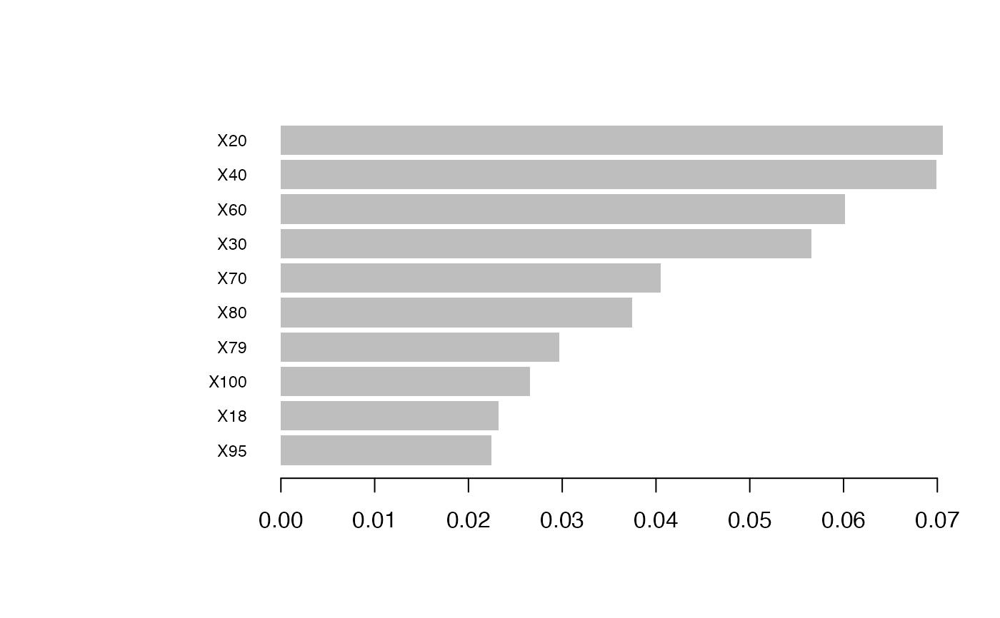
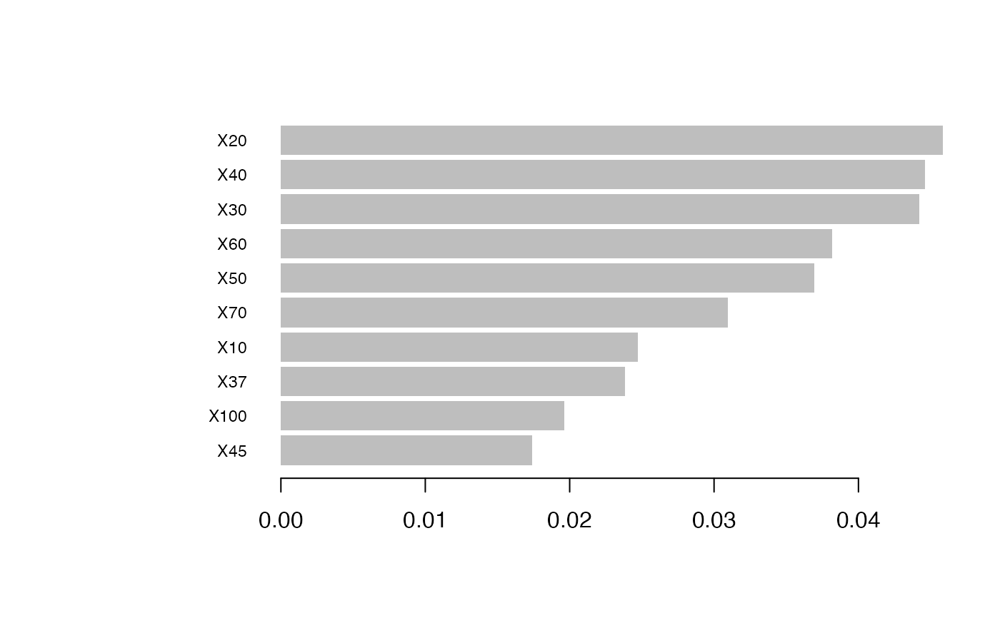
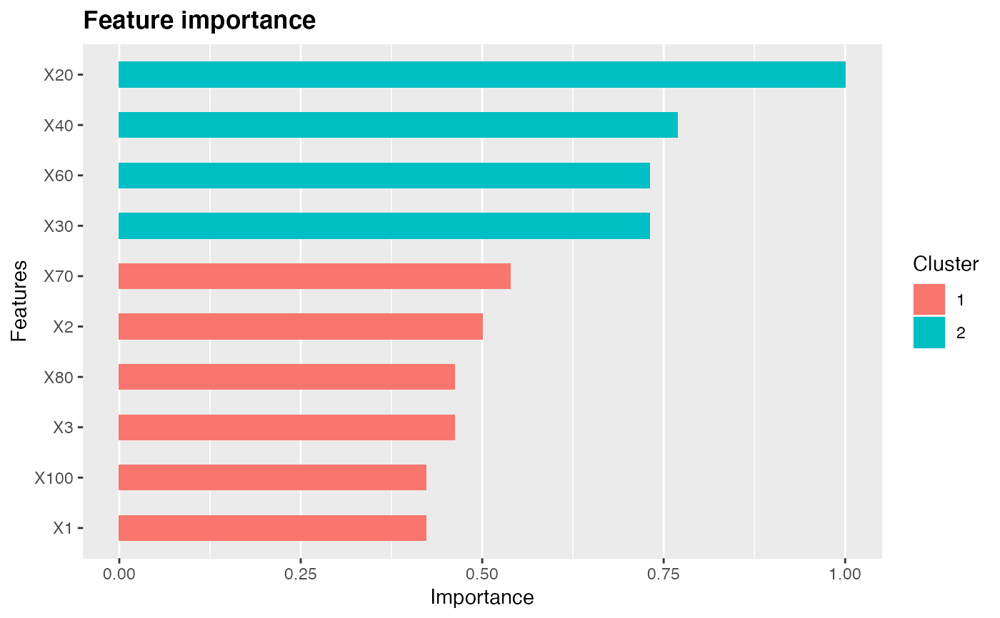
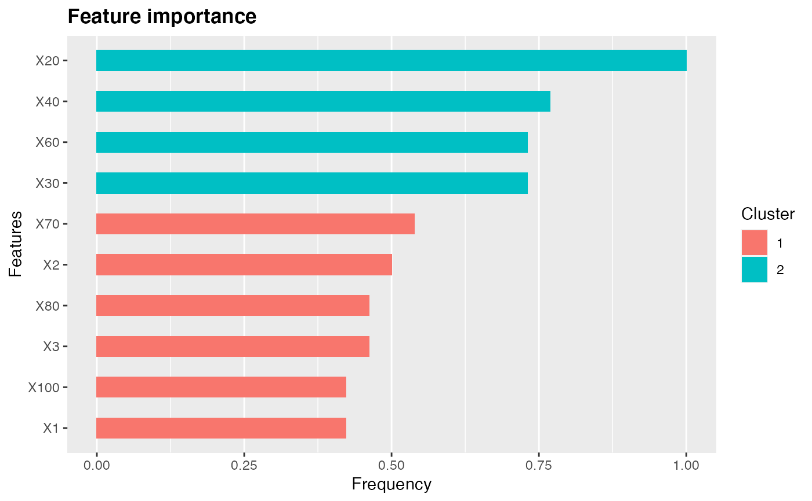

xgb.sur.Rdxgb.sur is a function to model survival data using xgboost::xgb.cv and we add a new
self-defined loss function to its original.
xgb.sur(datax, datay, method=c('defaut','pl','C'), nfolds=5, nround=NULL, lambda=NULL, alpha=NULL, eta=NULL, early_stopping_rounds=NULL )
| datax | data for covariates |
|---|---|
| datay | data for survival time and events |
| method | choose a loss function to be used,the default is "pl". |
| nfolds | default is 5. |
| nround | default is 1000 |
| lambda | L1 penalty parameter with default .01 |
| alpha | L2 penalty parameter with default .01 |
| eta | learning rate with default .01 |
| early_stopping_rounds | early stopping rounds with default 20 |
an objective of class xgboost:xgb.cv.
library(MASS) library(xgboost) library(survival) library(dplyr) library(magrittr) library(survcomp) #simulate survival data n <- 1000 p <- 100 rho <- 0.5 tt <- round(.8*n) V <- diag(p) X <- mvrnorm(n = n, mu = rep(0, p), Sigma = V) xname<-rep(0,100) for (i in 1:100) { tx<-paste("X",i,sep='') xname[i]<-tx } colnames(X)<-xname # ### nonlinear transformation mu <- exp(2*pnorm((X[, 10] > 0.5) + X[, 20] ^ 2 - 1) + 2*pnorm(0.5*X[, 30]+X[, 40]^2 - 1) + 2*pnorm(0.5 * X[, 50]+X[, 60] ^ 2 - 1) + 2*pnorm(sin(X[, 70]) + X[, 80] ^ 2 - 1) + 2*pnorm(cos(X[, 90])+X[, 100] ^ 2 - 1)) # ### survival time simulation obs_time <- -(log(runif(n)))/(mu) a <- 0.2*rbinom(n = n, size = 1, prob = 1/3) b <- runif(n = n, min = 0, max = 0.2) a[a == 0] <- b[a == 0] C <- a status <- as.numeric(obs_time <= C) obs_time <- pmin(obs_time, C) surv_time <- Surv(obs_time, status) y<-cbind(status,obs_time) colnames(y)<-c('status','time') y<-as.data.frame(y) surv_time_boost <- 2 * obs_time * (status - .5) x_train <- X[seq_len(tt), ] y_train <- y[seq_len(tt),] x_test <- X[(tt + 1) : n, ] y_test <- surv_time[(tt + 1) : n] y_test_boost <- surv_time_boost[(tt + 1) : n] # xgb_cox_m<-xgb.sur(x_train,y_train) xgb_cix_m<-xgb.sur(x_train,y_train,method = 'C') XDtest <- xgb.DMatrix(x_test, label = y_test_boost) y_xgcox_predict <- -rowMeans(sapply(xgb_cox_m$models, predict, XDtest)) y_xgcidx_predict <- -rowMeans(sapply(xgb_cix_m$models, predict, XDtest)) cidx_result <- c('XGB_Cox' = concordance(y_test ~ y_xgcox_predict)$con, 'XGB_Cidx' = concordance(y_test ~ y_xgcidx_predict)$con) # importance plot # xgb model imp_xgb=xgb.importance(colnames(x_train), model = xgb_cox_m$models[[1]]) imp_xgb_cix=xgb.importance(colnames(x_train), model = xgb_cix_m$models[[1]]) xgb.plot.importance(imp_xgb,top_n = 10)# ggplot (gg <- xgb.ggplot.importance(imp_xgb, top_n = 10,measure = "Frequency", rel_to_first = TRUE))